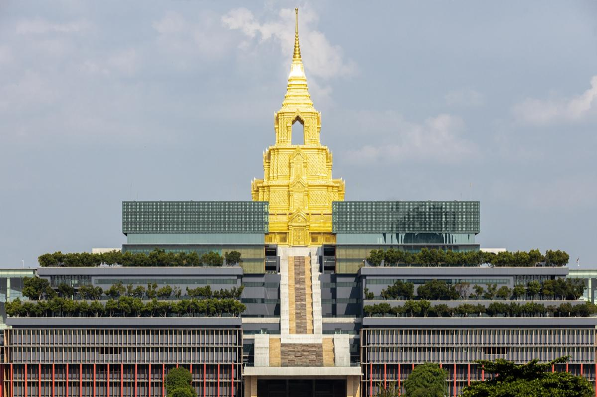

คลังสรุปการประชุม · ปี พ.ศ. 2569
ทุกการประชุม ตั้งแต่ ครั้งที่ 1/2569 ในที่เดียว
สรุปการประชุมคณะกรรมาธิการการบริหารราชการแผ่นดิน วุฒิสภา ทุกครั้ง พร้อมวิดีโอและเอกสารต้นฉบับ เลือกได้เลยว่าต้องการทำอะไร
ภาพรวมทั้งปี: ตัวเลข ประธาน และประเด็นที่พบบ่อยแตะเพื่อเปิดแตะเพื่อปิด
ลำดับการประชุมและประธาน
1 · ม.ค.17 · เปลี่ยนประธาน
ประธาน พล.ต.ท.ยุทธนาประธาน นายธวัชรองประธานปฏิบัติหน้าที่แทนนัดประชุม
ประเด็นที่พบบ่อย
ประธานคณะกรรมาธิการและประธานคณะอนุกรรมาธิการ
ตำแหน่งตามทำเนียบคณะกรรมาธิการบนเว็บไซต์วุฒิสภา ณ 9 พ.ย. 2569 · ภาพ: สำนักงานเลขาธิการวุฒิสภา (senate.go.th)
สมาชิกวุฒิสภาในคณะกรรมาธิการ
เรียงตามทำเนียบคณะกรรมาธิการบนเว็บไซต์วุฒิสภา